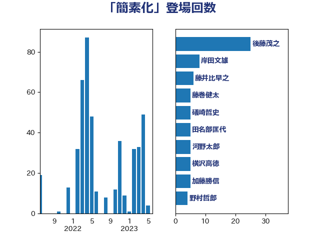

単語「簡素化」

| 後藤茂之 | 自由民主党 | 25 回 |
| 岸田文雄 | 自由民主党 | 8 回 |
| 藤井比早之 | 自由民主党 | 6 回 |
| 藤巻健太 | 日本維新の会 | 5 回 |
| 礒崎哲史 | 国民民主党 | 5 回 |
| 田名部匡代 | 立憲民主党 | 5 回 |
| 河野太郎 | 自由民主党 | 5 回 |
| 横沢高徳 | 立憲民主党 | 5 回 |
| 加藤勝信 | 自由民主党 | 5 回 |
| 野村哲郎 | 自由民主党 | 4 回 |
| 田村まみ | 国民民主党 | 4 回 |
| 田中健 | 国民民主党 | 4 回 |
| 末松信介 | 自由民主党 | 4 回 |
| 早坂敦 | 日本維新の会 | 4 回 |
| 川合孝典 | 国民民主党 | 4 回 |
| 岡田直樹 | 自由民主党 | 4 回 |
| 山井和則 | 立憲民主党 | 4 回 |
| 古川康 | 自由民主党 | 4 回 |
| 須藤元気 | 無所属 | 3 回 |
| 鈴木俊一 | 自由民主党 | 3 回 |
| 金城泰邦 | 公明党 | 3 回 |
| 谷合正明 | 公明党 | 3 回 |
| 落合貴之 | 立憲民主党 | 3 回 |
| 空本誠喜 | 日本維新の会 | 3 回 |
| 田畑裕明 | 自由民主党 | 3 回 |
| 梅村みずほ | 日本維新の会 | 3 回 |
| 斉藤鉄夫 | 公明党 | 3 回 |
| 徳永久志 | 立憲民主党 | 3 回 |
| 寺田稔 | 自由民主党 | 3 回 |
| 大串博志 | 立憲民主党 | 3 回 |
| 中村裕之 | 自由民主党 | 3 回 |
| 中川貴元 | 自由民主党 | 3 回 |
| 高橋千鶴子 | 日本共産党 | 2 回 |
| 金子恵美 | 立憲民主党 | 2 回 |
| 野田聖子 | 自由民主党 | 2 回 |
| 遠藤良太 | 日本維新の会 | 2 回 |
| 逢沢一郎 | 自由民主党 | 2 回 |
| 西村明宏 | 自由民主党 | 2 回 |
| 西岡秀子 | 国民民主党 | 2 回 |
| 藤木眞也 | 自由民主党 | 2 回 |
| 舟山康江 | 国民民主党 | 2 回 |
| 羽田次郎 | 立憲民主党 | 2 回 |
| 紙智子 | 日本共産党 | 2 回 |
| 窪田哲也 | 公明党 | 2 回 |
| 稲富修二 | 立憲民主党 | 2 回 |
| 神谷宗幣 | 参政党 | 2 回 |
| 石井苗子 | 日本維新の会 | 2 回 |
| 牧島かれん | 自由民主党 | 2 回 |
| 熊谷裕人 | 立憲民主党 | 2 回 |
| 渡辺創 | 立憲民主党 | 2 回 |
| 永井学 | 自由民主党 | 2 回 |
| 梅村聡 | 日本維新の会 | 2 回 |
| 林芳正 | 自由民主党 | 2 回 |
| 本村伸子 | 日本共産党 | 2 回 |
| 川田龍平 | 立憲民主党 | 2 回 |
| 岸真紀子 | 立憲民主党 | 2 回 |
| 山際大志郎 | 自由民主党 | 2 回 |
| 山本香苗 | 公明党 | 2 回 |
| 小林鷹之 | 自由民主党 | 2 回 |
| 小林史明 | 自由民主党 | 2 回 |
| 塩川鉄也 | 日本共産党 | 2 回 |
| 堀場幸子 | 日本維新の会 | 2 回 |
| 國場幸之助 | 自由民主党 | 2 回 |
| 古賀之士 | 立憲民主党 | 2 回 |
| 高橋光男 | 公明党 | 1 回 |
| 高市早苗 | 自由民主党 | 1 回 |
| 馬場成志 | 自由民主党 | 1 回 |
| 青木愛 | 立憲民主党 | 1 回 |
| 青山大人 | 立憲民主党 | 1 回 |
| 金村龍那 | 日本維新の会 | 1 回 |
| 野間健 | 立憲民主党 | 1 回 |
| 野田国義 | 立憲民主党 | 1 回 |
| 進藤金日子 | 自由民主党 | 1 回 |
| 赤松健 | 自由民主党 | 1 回 |
| 谷川とむ | 自由民主党 | 1 回 |
| 西村康稔 | 自由民主党 | 1 回 |
| 藤川政人 | 自由民主党 | 1 回 |
| 萩生田光一 | 自由民主党 | 1 回 |
| 荒井優 | 立憲民主党 | 1 回 |
| 若林健太 | 自由民主党 | 1 回 |
| 若松謙維 | 公明党 | 1 回 |
| 美延映夫 | 日本維新の会 | 1 回 |
| 緒方林太郎 | 無所属 | 1 回 |
| 米山隆一 | 立憲民主党 | 1 回 |
| 竹内譲 | 公明党 | 1 回 |
| 竹内真二 | 公明党 | 1 回 |
| 稲津久 | 公明党 | 1 回 |
| 秋野公造 | 公明党 | 1 回 |
| 磯崎仁彦 | 自由民主党 | 1 回 |
| 石川香織 | 立憲民主党 | 1 回 |
| 石川博崇 | 公明党 | 1 回 |
| 石井啓一 | 公明党 | 1 回 |
| 田村智子 | 日本共産党 | 1 回 |
| 牧義夫 | 立憲民主党 | 1 回 |
| 漆間譲司 | 日本維新の会 | 1 回 |
| 浮島智子 | 公明党 | 1 回 |
| 浜田聡 | NHK党 | 1 回 |
| 浅田均 | 日本維新の会 | 1 回 |
| 水岡俊一 | 立憲民主党 | 1 回 |
| 橘慶一郎 | 自由民主党 | 1 回 |
| 横山信一 | 公明党 | 1 回 |
| 森山浩行 | 立憲民主党 | 1 回 |
| 梶原大介 | 自由民主党 | 1 回 |
| 松野明美 | 日本維新の会 | 1 回 |
| 東徹 | 日本維新の会 | 1 回 |
| 杉尾秀哉 | 立憲民主党 | 1 回 |
| 杉久武 | 公明党 | 1 回 |
| 本田顕子 | 自由民主党 | 1 回 |
| 末松義規 | 立憲民主党 | 1 回 |
| 新妻秀規 | 公明党 | 1 回 |
| 掘井健智 | 日本維新の会 | 1 回 |
| 徳永エリ | 立憲民主党 | 1 回 |
| 川崎ひでと | 自由民主党 | 1 回 |
| 岡本あき子 | 立憲民主党 | 1 回 |
| 山添拓 | 日本共産党 | 1 回 |
| 山本佐知子 | 自由民主党 | 1 回 |
| 山口晋 | 自由民主党 | 1 回 |
| 小田原潔 | 自由民主党 | 1 回 |
| 小泉進次郎 | 自由民主党 | 1 回 |
| 小沼巧 | 立憲民主党 | 1 回 |
| 小沢雅仁 | 立憲民主党 | 1 回 |
| 宮本徹 | 日本共産党 | 1 回 |
| 宮崎政久 | 自由民主党 | 1 回 |
| 守島正 | 日本維新の会 | 1 回 |
| 堤かなめ | 立憲民主党 | 1 回 |
| 城内実 | 自由民主党 | 1 回 |
| 国光あやの | 自由民主党 | 1 回 |
| 和田義明 | 自由民主党 | 1 回 |
| 和田政宗 | 自由民主党 | 1 回 |
| 吉田久美子 | 公明党 | 1 回 |
| 吉田とも代 | 日本維新の会 | 1 回 |
| 古賀友一郎 | 自由民主党 | 1 回 |
| 古川禎久 | 自由民主党 | 1 回 |
| 古屋範子 | 公明党 | 1 回 |
| 北神圭朗 | 無所属 | 1 回 |
| 勝部賢志 | 立憲民主党 | 1 回 |
| 佐藤英道 | 公明党 | 1 回 |
| 佐々木さやか | 公明党 | 1 回 |
| 住吉寛紀 | 日本維新の会 | 1 回 |
| 伊藤俊輔 | 立憲民主党 | 1 回 |
| 伊波洋一 | 無所属 | 1 回 |
| 伊東信久 | 日本維新の会 | 1 回 |
| 今井絵理子 | 自由民主党 | 1 回 |
| 井上貴博 | 自由民主党 | 1 回 |
| 中島克仁 | 立憲民主党 | 1 回 |
| 中司宏 | 日本維新の会 | 1 回 |
| 上田勇 | 公明党 | 1 回 |
| たがや亮 | れいわ新選組 | 1 回 |
| おおつき紅葉 | 立憲民主党 | 1 回 |